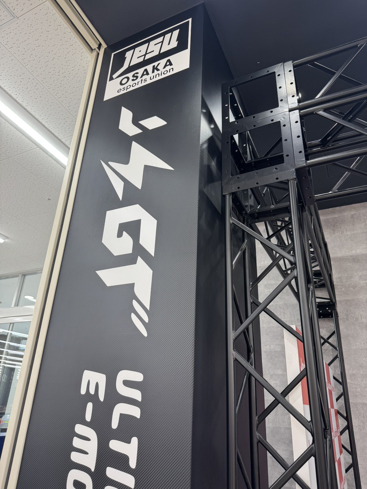

Our supporting member Joshin Corporation displays the JeSU Osaka logo in the first-floor esports section of Joshin Kishiwada in Kishiwada City.
The JeSU Osaka logo is on the corner pillar and appears alongside the Joshin eSPORTS and Osaka eSports Growth Guild (OeGG) logos on the first-floor store map.


The esports section reopened after renovation on Saturday, October 24, 2026. A racing simulator is set up during events, and card game tournaments and other events are planned (Joshin notice ).
Joshin joined JeSU Osaka as a supporting member on July 1, 2026 (New member announcement). We also participate together in the Osaka eSports Growth Guild (OeGG) to promote esports in Osaka.
Please be sure to take a look when you visit nearby.